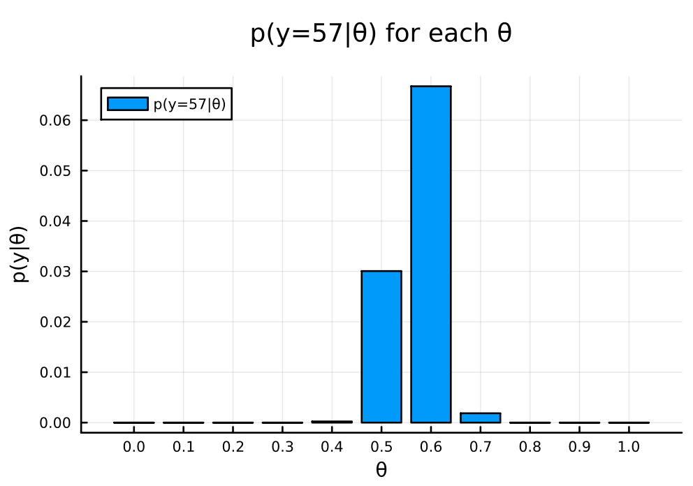
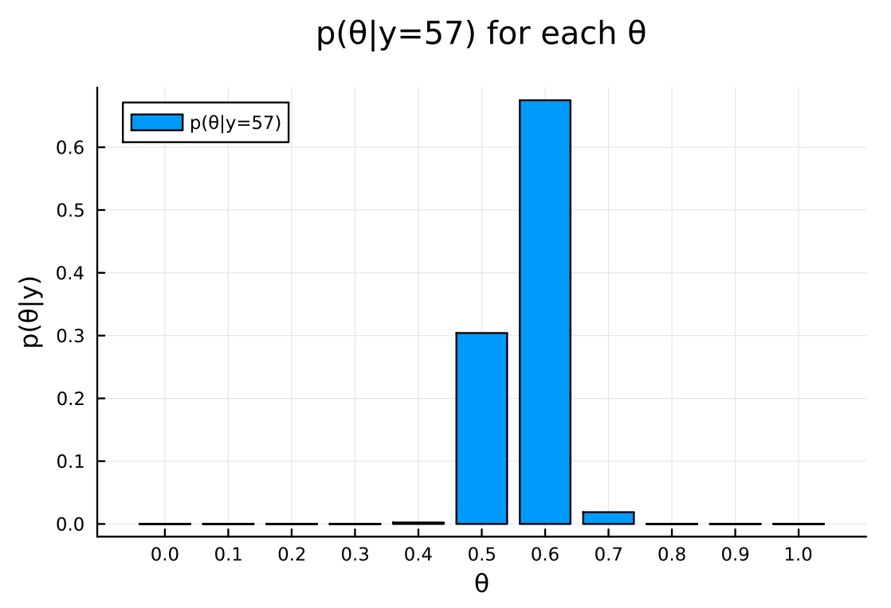
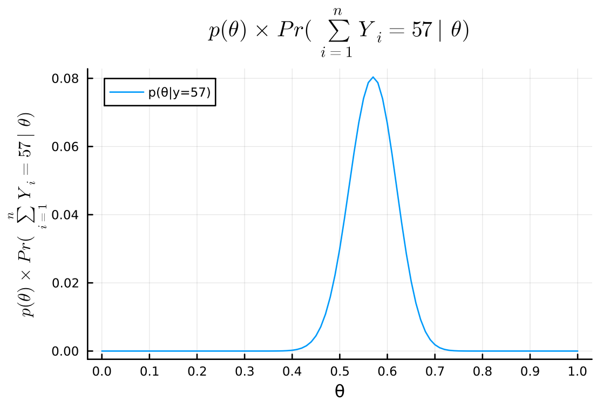
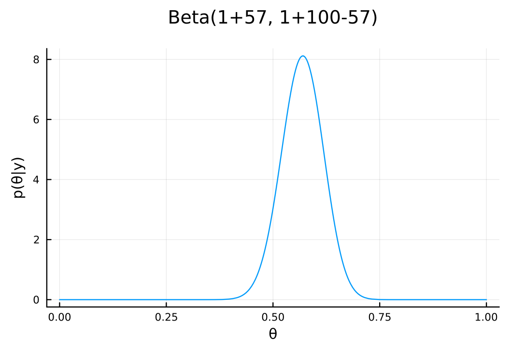

Exercise 3.1 Solution Example - Hoff, A First Course in Bayesian Statistical Methods
標準ベイズ統計学 演習問題 3.1 解答例
Answer
a
Answer
\begin{align*}
& \text{Pr}(Y_1 = y_1, \dots , Y_{100}=y_{100} \mid \theta) \\
= &\text{Pr}(Y_1 = y_1 \mid \theta) \cdot \text{Pr}(Y_2 = y_2 \mid \theta) \cdot \dots \cdot \text{Pr}(Y_{100} = y_{100} \mid \theta)
\qquad (\because \text{conditionally i.i.d.}) \\
= &\prod_{i=1}^{100} \text{Pr}(Y_i = y_i \mid \theta) \\
= &\theta^{\sum_{i=1}^{100} y_i} (1 - \theta)^{100 - \sum_{i=1}^{100} y_i}
\end{align*}
\begin{align*}
\text{Pr}\left(\sum Y_i = y \mid \theta\right)
&= \begin{pmatrix} 100 \\ y \end{pmatrix} \theta^y (1-\theta)^{100-y}
\end{align*}
b
Answer
begin using Plots using Plots.PlotMeasures using Distributions θ = 0:0.1:1.0 n = 100 y = 57 # 全てのθで計算 pdf_for_θs = map(θ -> pdf(Binomial(n, θ), y), θ) end
11-element Vector{Float64}:
0.0
4.107156919234531e-31
3.7384586685675986e-16
1.3068947992216428e-8
0.000228579175709527
0.03006864264421479
0.06672894967432967
0.0018531715480875613
1.0035348574340773e-7
9.39585764212832e-18
0.0
# plot bar( θ, pdf_for_θs, xlabel = "θ", ylabel = "p(y|θ)", title = "p(y=$y|θ) for each θ", label = "p(y=$y|θ)", legend = :topleft, size = (600, 400) , margin = 5mm , xticks = 0:0.1:1.0 )

c
Answer
\begin{align*}
p(\theta \mid \sum_{i=1}^{100} Y_i = 57)
&= \frac{p(\sum_{i=1}^{100} Y_i = 57 \mid \theta) p(\theta)}{p(\sum_{i=1}^{100} Y_i = 57)} \\
&= \frac{p(\sum_{i=1}^{100} Y_i = 57 \mid \theta) p(\theta)}{\sum_{\theta} p(\sum_{i=1}^{100} Y_i = 57 \mid \theta) p(\theta)} \\
&= \frac{\text{Pr}\left(\sum Y_i = 57 \mid \theta\right) p(\theta)}{\sum_{\theta} \text{Pr}\left(\sum Y_i = 57 \mid \theta\right) p(\theta)} \\
&= \frac{\text{Pr}\left(\sum Y_i = 57 \mid \theta\right) \frac{1}{11} }{\sum_{\theta} \text{Pr}\left(\sum Y_i = 57 \mid \theta\right) \frac{1}{11} } \\
&= \frac{\text{Pr}\left(\sum Y_i = 57 \mid \theta\right) }{\sum_{\theta} \text{Pr}\left(\sum Y_i = 57 \mid \theta\right) } \\
\end{align*}
b で求めたものを使うと以下のように簡単に計算できる。 (Using the result from b, we can easily calculate the posterior probability.)
posterior_for_θs = pdf_for_θs ./ sum(pdf_for_θs)
11-element Vector{Float64}:
0.0
4.153700946664936e-30
3.780824452548815e-15
1.3217050800508843e-7
0.0023116953094392757
0.30409393133068335
0.6748515016170306
0.018741724664998797
1.0149073359758722e-6
9.502335447682657e-17
0.0
bar( θ, posterior_for_θs, xlabel = "θ", ylabel = "p(θ|y)", title = "p(θ|y=$y) for each θ", label = "p(θ|y=$y)", legend = :topleft, size = (600, 400) , margin = 5mm , xticks = 0:0.1:1.0 )

d
Answer
\begin{align*}
p(\theta) \times \text{Pr}(\sum_{i=1}^n Y_i = 57 \mid \theta)
&= \text{Pr}(\sum_{i=1}^n Y_i = 57 \mid \theta)
\qquad (\because \text{Pr}(\theta) = 1) \\
&= \begin{pmatrix} 100 \\ 57 \end{pmatrix} \theta^{57} (1-\theta)^{43} \\
&= \text{dbinom}(57, 100, \theta)
\end{align*}
よって、以下のように計算できる。 (Therefore, we can calculate it as follows.)
posterior = x -> pdf(Binomial(n, x), y) # plot xs = 0:0.01:1.0 plot( xs, posterior.(xs), xlabel = "θ", ylabel = L"p(\theta) \times Pr(\sum_{i=1}^n Y_i = 57 \mid \theta)", title = L"p(\theta) \times Pr(\sum_{i=1}^n Y_i = 57 \mid \theta)", label = "p(θ|y=$y)", legend = :topleft, size = (600, 400) , margin = 5mm , xticks = 0:0.1:1.0 )

e
Answer
plot( Beta(1+y, 1+n-y), xlabel = "θ", ylabel = "p(θ|y)", title = "Beta(1+$y, 1+$n-$y)", label = nothing , size = (600, 400) , margin = 5mm )

d と e は同じ形状で、dを正規化したのが e。また、c, b のグラフは、パラメータ\(\theta\)を 11 個の値をとる離散変数として扱っているもので、同じ形状をしている。コードを見ればわかるように、それぞれの確率の和が 1 になるように正規化しているのが c である。
(3.1d and 3.1e have the same shape, and 3.1e is a normalized version of 3.1d. 3.1c and 3.1b are graphs that treat the parameter \(\theta\) as a discrete variable that takes 11 values, and they have the same shape. As you can see from the code, 3.1c is normalized so that the sum of the probabilities is 1.)